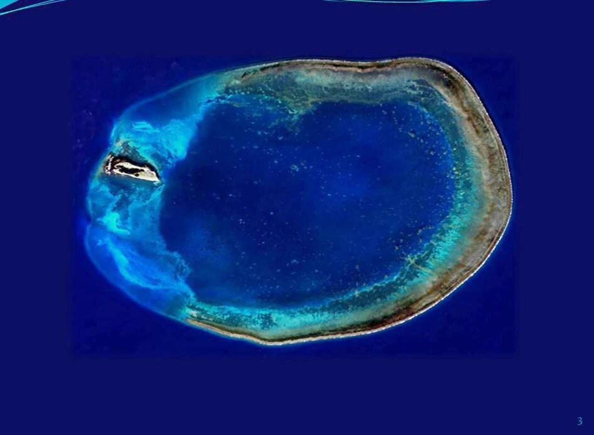

東沙環礁國家公園為中華民國第七座國家公園、第一座海洋國家公園，隸屬中華民國內政部營建署，於2007年1月17日成立，並於該年的10月4日成立海洋國家公園管理處管理之。東沙環礁國家公園包含南海的東沙島與其環礁，及附近海域，總面積為353,667.95公頃，陸域面積為178.57公頃，剩餘部份為海域面積[3]。園區主要為東沙島與包含前者的直徑25公里的圓形環礁，為熱帶季風氣候，距高雄港445公里。